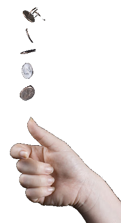
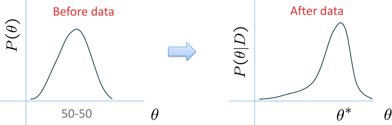
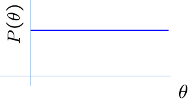
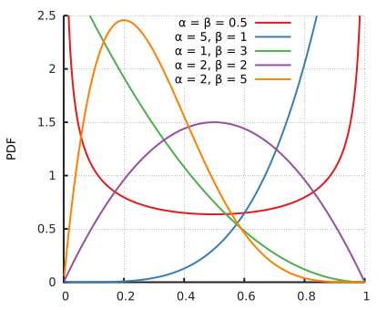
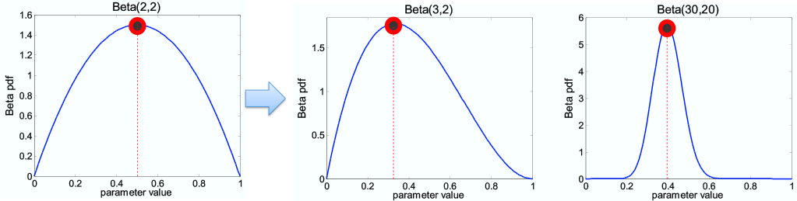
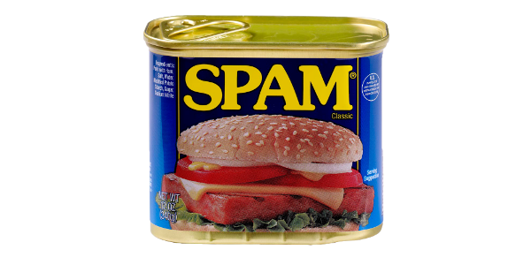
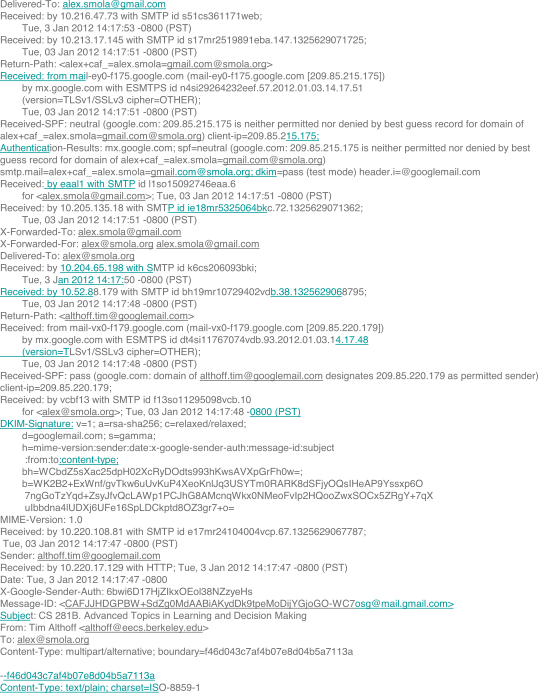
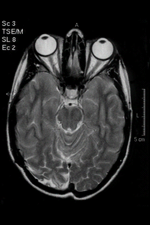
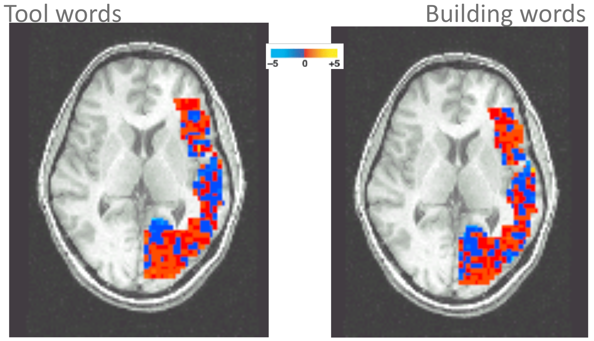

Advanced Machine Learning
10: Naive Bayes
Schedule (you are here )
| # | date | topic | description |
|---|---|---|---|
| 1 | 24-Aug-2026 | Introduction | |
| 2 | 26-Aug-2026 | Foundations of learning | Drop/Add |
| 3 | 31-Aug-2026 | PAC learnability | HW1 |
| 4 | 02-Sep-2026 | Linear learning models | |
| 5 | 07-Sep-2026 | Labor Day Holiday | Holiday |
| 6 | 09-Sep-2026 | Principal Component Analysis | Project ideas |
| 7 | 14-Sep-2026 | Curse of Dimensionality | HW2, HW1 due |
| 8 | 16-Sep-2026 | Bayesian Decision Theory | |
| 9 | 21-Sep-2026 | Parameter estimation: MLE | |
| 10 | 23-Sep-2026 | Parameter estimation: MAP & NB | finalize teams |
| 11 | 28-Sep-2026 | Logistic Regression | HW3, HW2 due |
| 12 | 30-Sep-2026 | Kernel Density Estimation | |
| 13 | 05-Oct-2026 | Support Vector Machines | |
| 14 | 07-Oct-2026 | Matrix Factorization | |
| 15 | 12-Oct-2026 | * Midterm | Exam, HW3 due |
| 16 | 14-Oct-2026 | k-means clustering | |
| 17 | 19-Oct-2026 | Invited: Intro to Causal Learning I |
| # | date | topic | description |
|---|---|---|---|
| 18 | 21-Oct-2026 | Invited: Intro to Causal Learning II | |
| 19 | 26-Oct-2026 | * Mid-point projects checkpoint | HW4, P |
| 20 | 28-Oct-2026 | Expectation Maximization | |
| 21 | 02-Nov-2026 | Stochastic Gradient Descent | |
| 22 | 04-Nov-2026 | Automatic Differentiation | |
| 23 | 09-Nov-2026 | Nonlinear embedding approaches | HW5, HW4 due |
| 24 | 11-Nov-2026 | Model comparison | |
| 25 | 16-Nov-2026 | Model Calibration | |
| 26 | 18-Nov-2026 | Convolutional Neural Networks | |
| 27 | 23-Nov-2026 | Thanksgiving Break | Holiday |
| 28 | 25-Nov-2026 | Thanksgiving Break | Holiday |
| 29 | 30-Nov-2026 | Word Embedding | |
| 30 | 02-Dec-2026 | Project Final Presentations | HW5 due, P |
| 31 | 07-Dec-2026 | Presentation spillover / Exam prep | Classes End |
| 32 | 09-Dec-2026 | * Final Exam | Exam |
| 33 | 16-Dec-2026 | Project Reports | due |
| 34 | 17-Dec-2026 | Grades due 5 p.m. | PAWS |
Outline of this lecture
- Parameter Estimation: MAP
- The Naïve Bayes Classifier
- Missing Data & Laplace Smoothing
- Take Home Points
MAP estimation
I suspect the coin is biased

What about the knowledge we already have?
We know the coin is “close” to 50-50. What can we do now?
Follow the Bayesian way ...
Rather than estimating a single $\theta$, obtain a distribution over possible values of $\theta$

Prior distribution
What kind of prior distribution do we want to use?- Represents expert knowledge (philosophical approach)
- Simple posterior form (engineering approach)
Uninformative priors:
- Uniform distribution

Conjugate priors:
- Closed-form representation of posterior
- $\prob{P}{\theta}$ and $\prob{P}{\theta|{\cal D}}$ have the same form
Bayes rule (revisited)

Bayes, Thomas (1763): An essay towards solving a problem in the doctrine of chances. Philosophical Transactions of the Royal Society of London, 53:370-418
Chain Rule & Bayes rule
Chain rule:
$\prob{P}{X,Y} = \prob{P}{X|Y}\prob{P}{Y} = \prob{P}{Y|X}\prob{P}{X}$
Bayes rule:
$\prob{P}{X|Y} = \frac{\prob{P}{Y|X}\prob{P}{X}}{\prob{P}{Y}}$
Bayes rule is important for reverse conditioning
Bayesian Learning
- Use Bayes rule
$ \prob{P}{\theta|{\cal D}} = \frac{\prob{P}{{\cal D}|\theta}\prob{P}{\theta}}{\prob{P}{\vec{{\cal D}}}} $
- Or equivalently
$ \prob{P}{\theta|{\cal D}} \propto \prob{P}{{\cal D}|\theta}\prob{P}{\theta} $
- Which is, as we know:
$ \mbox{posterior} \propto \mbox{likelihood}\times\mbox{prior} $
MLE vs. MAP
-
Maximum Likelihood estimation (MLE)
Choose value that maximizes the probability of observed data
$ \hat{\theta}_{MLE} = \underset{\theta}{\argmax} \prob{P}{{\cal D}|\theta} $ -
Maximum a posteriori (MAP) estimation Choose value that is most probable given observed data and prior belief \begin{align} \hat{\theta}_{MAP} & = \underset{\theta}{\argmax} \prob{P}{\theta|{\cal D}}\\ & = \underset{\theta}{\argmax} \prob{P}{{\cal D}|\theta}\prob{P}{\theta} \end{align}
MAP for Binomial distribution
Coin flip problem: Binomial likelihood
$\prob{P}{{\cal D}|\theta} = {n \choose \alpha_H} \theta^{\alpha_H} (1-\theta)^{\alpha_T}$
If the prior is Beta distribution,
\begin{align} \prob{P}{\theta} &= \frac{1}{\prob{B}{\beta_H,\beta_T}} \theta^{\beta_H-1}(1-\theta)^{\beta_T-1} \sim \prob{Beta}{\beta_H,\beta_T}\\ \prob{B}{x,y} &= \int_0^1 t^{x-1}(1-t)^{y-1}dt = \frac{\Gamma(x)\Gamma(y)}{\Gamma(x+y)} \end{align}
posterior is Beta distribution
MAP for Binomial distribution
Binomial likelihood
$\prob{P}{{\cal D}|\theta} = {n \choose \alpha_H} \theta^{\alpha_H} (1-\theta)^{\alpha_T}$
Beta prior
$ \prob{P}{\theta} \sim \prob{Beta}{\beta_H,\beta_T} $
Beta posterior
$\prob{P}{\theta|{\cal D}} = \prob{Beta}{\beta_H+\alpha_H, \beta_T + \alpha_T}$
$\prob{P}{\theta}$ and $\prob{P}{\theta|{\cal D}}$ have the same form: Conjugate prior
$\hat{\theta}_{MAP} = \frac{\alpha_H+\beta_H -1}{\alpha_H + \beta_H + \alpha_T + \beta_T -2}$
Beta distribution
More concentrated as values of $\alpha, \beta$ increase
Beta conjugate prior

$n = \alpha_H + \alpha_T$ increases $\rightarrow$
As we get more samples, effect of prior “washes out”
Interactive: Beta-Binomial Updating
Prior P(θ)
Likelihood P(D|θ)
Posterior P(θ|D)
Prior: Beta(10, 10)
Data: αH=0, αT=0 (N=0)
θ̂MAP: 0.500
θ̂MLE: —
(N = 0)
Prior:
|
Flips:
Multinomial distribution
Example: Dice roll problem (6 outcomes instead of 2)
-
Likelihood is $\sim \prob{Multinomial}{\theta=\{\theta_1,\theta_2,\dots,\theta_k\}}$
$ \prob{P}{{\cal D}|\theta} = \theta^{\alpha_1}_1\theta^{\alpha_2}_2,\dots,\theta^{\alpha_k}_k $
-
If prior is the Dirichlet distribution:
$ \prob{P}{\theta} = \frac{\prod_{i=1}^k\theta_i^{\beta_i-1}}{\prob{B}{\beta_1, \beta_2, \dots, \beta_k}} $
-
the posterior is the Dirichlet distribution:
\[ \prob{P}{\theta|{\cal D}} = \prob{Dirichlet}{\beta_1+\alpha_1, \dots, \beta_k+\alpha_k} \]
Bayes rule (practice again)
Fruits in boxes (homework)
AIDS test
Data
- Approximately 0.1% are infected
- Test detects all infections (no false negatives)
- Test reports positive for 1% of healthy
- $+$ - tested positively
- $\prob{P}{AIDS} = 0.001$
- $\prob{P}{\overline{AIDS}} = 0.999$
- $\prob{P}{+|AIDS} = 1$
- $\prob{P}{+|\overline{AIDS}} = 0.01$
- $\prob{P}{AIDS|+} \approx 9\%$
Improve the diagnosis
Use a follow-up test!
- Test 2 reports positive for 90% of infected
- Test 2 reports positive for 5% of healthy people
- $+_1, +_2$ - tested positively
- $\prob{P}{AIDS} = 0.001$
- $\prob{P}{\overline{AIDS}} = 0.999$
- $\prob{P}{+_1,+_2|AIDS}$
- $\prob{P}{+_1, +_2|\overline{AIDS}}$
- $\prob{P}{AIDS|+_1, +_2} \approx 64%\%$
- Outcomes are not independent but test 1 and 2 are conditionally independent $\prob{P}{t_1,t_2|a} = \prob{P}{t_1|a} \prob{P}{t_2|a}$
The Naïve Bayes Classifier

Detector for spam filtering
- date
- time
- recipient path
- IP number
- sender
- encoding
- many more features

The Naïve Bayes Assumptions
Features $X_i$ and $X_j$ are conditionally independent given the class label $Y$
$\prob{P}{X_i,X_j|Y} = \prob{P}{X_i|Y}\prob{P}{X_j|Y}$
$\prob{P}{X_1,\dots, X_d|Y} = \prod_{i=1}^d \prob{P}{X_i|Y}$
How many parameters to estimate?$\mathbf{X}$ is a binary vector where each position encodes presence or absence of a feature. $\mathbf{Y}$ has K classes.
$(2^d - 1)K$ vs. $(2-1)dK$
The Naïve Bayes Classifier
Given:
- Class prior $\prob{P}{Y}$
- $d$ conditionally independent features $X_1, X_2, \dots, X_d$ given the class label $Y$
- For each $X_i$, we have the conditional likelihood $\prob{P}{X_i|Y}$
Decision rule: \begin{align} f_{NB}(\vec{x}) &= \underset{y}{\argmax} \prob{P}{x_1,\dots,x_d|y}\prob{P}{y} \\ &= \underset{y}{\argmax} \prod_{i=1}^d \prob{P}{x_i|y}\prob{P}{y}\\ \end{align}
The Naïve Bayes for discrete features
Training data: $\{(\vec{x}^j,y^j)\}_{j=1}^n \vec{x}^j = (x_1^j, \dots, x_d^j)$$n$ d-dimensional features plus class labels
$f_{NB}(\vec{x}) = \underset{y}{\argmax} \prod_{i=1}^d \prob{P}{x_i|y}\prob{P}{y}$
Estimate probabilities with relative frequencies!
- For class prior $\prob{P}{y} = \frac{\{\#j:y^j = y\}}{n}$
- For likelihood $\frac{\prob{P}{x_i,y}}{\prob{P}{y}} = \frac{\{\#j:\vec{x}_i^j = x_i, y^j=y\}/n}{\{\#j:y^j = y\}/n}$
Text Classification
- Ex1. Classify e-mails: $y \in \{ \mbox{Spam}, \mbox{NotSpam} \}$
- Ex2. Classify articles into topics
- What are the features of $\mathbf{X}$?
- Full text!
Text Classification: naïvely
- Fix max_len of an article and encode positions $\mathbf{X} = \{X_1, \dots, X_{1000}\}$
- $X_i$ is a word at $i^{th}$ position. $X_i \in \{0, \dots, D\}$, where $D$ is the size of the vocabulary (say 50,000 words).
- $\prob{P}{\mathbf{X}|Y}$ is large
- Need to estimate $K D^{1000} = K 50000^{1000}$ parameters
Naive Bayes to the rescue!
- $\prob{P}{X_i^j|y}$ probability of word $j$ at position $i$ for class $y$
- Need to estimate $DK1000 = 50000K1000$ parameters
Text Classification: bag of words
Word order and positions do not matter! Only presence
- $D=2 \implies$ $X_i$ is binary again
- $\mathbf{X}$ is vocabulary-length (say 50000) binary vector.
- Need to estimate $DK50000 = 50000K$ parameters
Works really well in practice!
Insufficient training data
- What if you never see $x_i = v$ for $y = k$?
-
No word "Luxury", when $y = \mbox{NoSpam}$ in the dataset
$\prob{P}{\mbox{Luxury} = 1, \mbox{NoSpam}} = 0 \implies \prob{P}{\mbox{Luxury} = 1| \mbox{NoSpam}} = 0$
- $\prob{P}{\mbox{Luxury}=1, X_2, \dots, X_n| Y} = $
- $\prob{P}{\mbox{Luxury}=1| Y} \prod_{i=2}^n \prob{P}{X_i|Y} =$
- $0$
- Now what?
Now what? Laplace Smoothing
The Zero-Frequency Problem: A single $P(x_i|y) = 0$ zeroes out the entire product ($\log P = -\infty$).
One unseen word in a 1,000-word legitimate email completely vetoes all other evidence!
Solution: Additive (Laplace) Smoothing
$\hat{P}(X_i = w \mid Y = y) = \frac{\text{count}(w, y) + \alpha}{\sum_{w' \in V} \text{count}(w', y) + \alpha |V|}$
Crucial AML Insight: Smoothing IS MAP Estimation!
- Remember our Dirichlet prior $\text{Dirichlet}(\beta_1, \dots, \beta_k)$ from coin/dice flips?
- Setting prior $\beta_i = \alpha + 1$ (or symmetric $\alpha$ pseudo-counts) gives the exact MAP estimate!
- $\alpha = 1$: Laplace's Rule of Succession (add 1 to each count).
- $0 < \alpha < 1$: Lidstone smoothing (e.g. $\alpha = 0.1$, common in modern NLP).
- $\alpha = 0$: Pure MLE (collapses whenever unseen data occurs).
Interactive: Zero Veto & Smoothing
Document: "project deadline meeting review luxury" (|V| = 1,000)
Smoothing Parameter α:
0.00
| Word wi | Ham Count | P(wi|Ham) | Spam Count | P(wi|Spam) | Ratio (Ham/Spam) |
|---|
P(Ham | document): 0.0%
log P: -∞
P(Spam | document): 100.0%
log P: -18.42
The Naïve Bayes Properties
- The counts seemed confusing but it is just a consequence of our choice of the likelihood and prior
- Conveniently estimated everything relative to individual points
- Need to watch out for empty label-feature combinations in the data
- Need to evaluate log probabilities, as products of small numbers lead to problems
What if the features are continuous?
Character recognition: $\vec{x}_{ij}$ is intensity at pixel $(i,j)$
Gaussian Naïve Bayes
$\prob{P}{X_i = \vec{x}_i|Y = y_k} = \frac{1}{\sigma_{ik}\sqrt{2\pi}} e^{-\frac{(\vec{x}_i - \mu_{ik})^2}{2\sigma_{ik^2}}}$Different mean and variance for each class $k$ and each pixel $i$.$^*$
Example: classifying mental states
- resolution around $1^3$ mm
- 1 image per 2 seconds
- about $15,000$ voxels per "frame"
- non-invasive and safe
- measures Blood Oxygenation Level Dependent (BOLD) response

P(Brain Activity | Word Category)
Pairwise classification accuracy $78-99\%$ on 12 participants
Take Home Points
- MLE vs. MAP: MLE maximizes likelihood $\argmax_\theta P(\mathcal{D}|\theta)$; MAP maximizes posterior $\argmax_\theta P(\mathcal{D}|\theta)P(\theta)$, regularizing against sparse-data overfitting.
- Conjugate Priors & Asymptotics: Hyperparameters act as virtual pseudo-counts (Beta, Dirichlet) that wash out as $N \to \infty$ ($\hat{\theta}_{\text{MAP}} \to \hat{\theta}_{\text{MLE}}$).
- The Naïve Independence Lift: Assuming $X_i \perp X_j \mid Y$ collapses joint complexity from $O(K D^d)$ to linear $O(K \cdot d \cdot D)$, defeating the curse of dimensionality.
- Zero Veto & Laplace Smoothing: Unseen features ($P=0$) zero out the posterior ($\log P = -\infty$); additive smoothing fixes this, equivalent to MAP with a Dirichlet prior.
- Log-Space & Gaussian NB: Summing logs prevents floating-point underflow; for continuous data, Gaussian NB assumes a diagonal covariance matrix (axis-aligned boundaries).